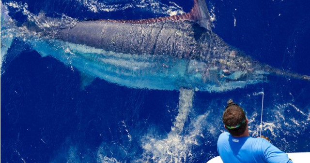
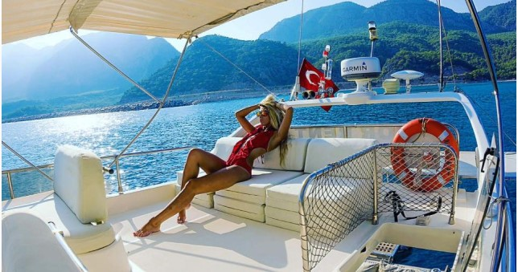

Клуб Рыбалки «Дарфиль»
Подари себе и своим близким незабываемые приключения на побережье Фуджейры!
Заказать лодкуО компании
Глубоководная рыбалка в ОАЭ
Приезжая в Объединенные Арабские Эмираты мы погружаемся в прекрасный и удивительный мир Арабской сказки. Роскошь отелей и высокий уровень сервиса ОАЭ, чистота и ухоженность парков и пляжей Фуджейры, неповторимые ароматы местной кухни и шум восточного рынка. Большинство людей стремится сюда, в Эмираты, понежится на белоснежных пляжах, омываемых теплыми водами Индийского океана.
Многих тристов увлекает глубоководная рыбалка в ОАЭ и подводный мир Фуджейры. Кто-то погружается с аквалангом под воду, а кто-то, как и мы, выходит на катере в открытом море-океане далеко от побережья, чтоб всецело отдаться незабываемой глубоководной рыбалке в Персидском заливе.
Рыбалка в Эмиратах на океане - это свобода, игра, творчество, спорт, общение и даже смысл жизни!
Клуб рыбалки Дарфиль один из лучших рыболовных клубов Фуджейры, расположенных на побережье Персидского и Оманского заливов, ОАЭ. Наши современные катамараны способны развивать высокую скорость, и оснащены всем необходимым для рыбалки в ОАЭ на океане, при любых погодных условиях Арабских Эмиратов.
Все оборудование только ведущих брендов и индивидуальный подход к каждому клиенту. Не важно опытный вы рыболов или первый раз держите в руках удочку, рыбалка в Фуджейре будет удачна и незабываема. Ведь мы знаем места, в которых Вы гарантированно поймаете настоящую трофейную рыбу. Все что мы предлагаем, проверил на собственном опыте.А наши клиенты получают именно т рыбалку в Объединенных Арабских Эмиратах, о которой они мечтали.
Но главное глубоководная рыбалка в ОАЭ - это всегда приключение!
Рыбалка
Клуб рыбалки Дарфиль предлагает несколько видов рыбалки в том числе и спортивной рыбалки в Эмиратах на океане на выбор для рыбаков разного уровня от новичков до профессиональных спортсменов рыболовов.
- Синий марлин
- Барракуда
- Большая корифена
- Квиинфиш (куини)
- Пеламида (Бонито)
- Рыба-парусник
- Тунец
- Рейнбоу раннер
- Рыба сарган
Голубой или синий марлин, это одна из самых больших известных науке костистых рыб, имеющая удлиненную верхнюю челюсть в виде пики. В латинском названии Makaira nigricans ,первое слово происходит от machaera, что значит «меч». И действительно, этот длинный меч, или копье, очень прочный, острый и круглый в диаметре применяется им при охоте, а так же служит для рассечения воды при передвижении, повышая его скоростные характеристики (до 95 км/ч). Марлины - хищники, питающиеся в поверхностных водах и способные за короткий промежуток времени совершать далекие миграции в поисках пищи.
Голубой марлин – азартный охотник. Его добычей служат в основном небольшие тунцы и кальмары. Так же его меню дополняют и другие морские животные, такие как омары, крабы и морские черепахи. Многие профессиональные охотники не раз отмечали тот факт, что, даже не будучи голодным, голубой марлин атакует свою жертву просто ради процесса охоты. Поэтому, если рядом с лодкой вдруг появляется марлин, он в большинстве случаев атакует предложенную приманку. Ареал его обитания не привязан к побережью. Марлины встречаются как в шельфовой зоне материков и островов, так и в открытом океане за тысячи километров от берега.
Название Барракуда применяется не только к одной конкретной рыбе, но и ко всему семейству рыб. Sphyraenidae - группа рыб, известная под общим названием "барракуды". Наиболее известным видом барракуд, который обычно встречается, может быть крупный вид барракуд (Sphyraena barracuda)
Тело барракуды имеет форму торпеды и предназначено для разрезания воды. Эта длинная, тонкая и мускулистая рыба - одна из самых быстрых в море, способная плавать со скоростью до 35 миль в час. Барракуды плавают почти так же быстро, как акулы, которые очень быстры. Рыба Барракуда не может поддерживать самую высокую скорость на больших расстояниях. Барракуда - спринтер. Большую часть времени они плавают достаточно медленно, чтобы проводить исследования пищи, и ускоряются только тогда, когда пища в пределах досягаемости.
Большинство видов рыб Барракуды обитает в прибрежной среде обитания, например, в мангровых зарослях и коралловых рифах. В основном они являются морскими рыбами, хотя некоторые разновидности иногда могут переносить пресную воду. Барракуды обитают в Атлантическом, Тихом и Индийском океанах, а также обычно встречаются в Карибском бассейне и Красном море.
Большая корифена — морская, океанодромная рыба. Распространена в тропических и субтропических водах Мирового океана. Обитает в приповерхностных водах до глубины 100 м. Часто следует за плавающими на поверхности водорослями. Совершает протяжённые сезонные миграции, перемещаясь в тёплое время года в более высокие широты. В это время встречается в умеренных водах. Так, летом большую корифену обнаруживали в Японском море, Татарском проливе, У южных Курильских островов и в Охотском море.
Queenfish или "куини" - рыба, известная во многих странах (Австралия, Калифорния, Таиланд и т.д.). О разведении, миграции и биологии квин фиш практически ничего неизвестно. Queenfish представляет собой длинное и чрезвычайно сжатое с боков тело. Его типичная окраска, как правило, темно-зеленая в верхней части спины и серебристого цвета с серебристо-белым оттенков на боках и животе, иногда с желтоватым оттенком. Большинство рыб-королев, пойманные рыболовами, могут весить от 0,8 до 8 кг. Редкие образцы весят до 10 или даже 12 кг и очень редко гигантов по 15 кг или чуть больше. Эта рыба легко ловится, как на живую приманку, так и на мертву мертвую, а также приманки из мух, креветок или кальмаров. С приманками, акцент должен быть сделан на движение и скорость, которая будет возбуждать рыбу. У этой рыбы белое мясо с отличным вкусом, хотя немного суховатым.
Пеламида(бонито) – рыба-хищник. Обычное ее меню составляют анчоус и сардина, скумбрия, ставридка и иные не слишком большие обитатели вод. Кстати, пеламида – рыба феноменально прожорливая. В пищеводе какой-нибудь выловленной особи вполне реально найти иногда до 70-ти анчоусов или другой пищи. Обычно данная рыба вырастает до полуметра (или чуть больше), взрослая особь может весить до 4 кг. Хотя порой встречаются и экземпляры до 85 см и весом до 7 кг.
Пеламида – рыба, знаменитая прекрасными вкусовыми качествами. К поздней осени особи данного вида обыкновенно скапливают много жира (более 10% от собственного веса), а посему мясо пеламид мягкое и жирное. Традиционно в рецептах рыба подвергается консервации, копчению. В общемировой кулинарии особо котируется чилийская пеламида – рыба с приятным, чуть сладким мясом, которое имеет немного специфический вкус.
Рыба-парусник – одна из самых скоростных в океане. Она способна развивать скорость до 100 км/ч благодаря необычному строению своего тела. Главной отличительной чертой рыбы является огромный первый спинной плавник, благодаря которому парусник и получил свое название. Парусник относится к отряду окунеобразных и является хищником. Питается небольшими рыбками – макрелью, анчоусами, сардинами. Не брезгует ракообразными и моллюсками.
Тунец - рыба с торпедообразным телом, которое идеально подходит для постоянного движения. Причем двигаются эти рыбы постоянно, не останавливаясь ни на минуту. Ловля тунца — крупного обитателя морей и океанов является захватывающим занятием, которое может подарить много незабываемых моментов как опытным рыбакам, так рыболовам-любителям. Многие из них совершенно зря недооценивают морскую рыбалку. Вместе с тем, те рыбаки, которые хоть раз отправлялись на тунца и возвращались с трофейной добычей, вряд ли откажутся испытать снова эту бурю захватывающих эмоций. Эта очень азартная и зрелищная рыбалка, на которой необходимо побывать всем
Обитает во всех тропических и теплых водах, где температура составляет 21-30 градусов по Цельсию. Встречаются в развалах, среди груды камней в обществе рыбы-лоцман, сопровождая акулу. Очень редко обитает в мелководье, в основном, в открытых водах. Ведет одиночный образ жизни, но может охотиться в стае.Его яркий окрас очень отличает от других видов рыб. Его яркие горизонтальные линии голубого, зеленого и желтого цветов чередуются между собой. Спина серебристо-зеленого цвета, брюхо серебристое, плавники от зеленоватого до оливково-желтого цвета. Хвост оливкового оттенка.Рекорд мира по данным IGFA: рэйнбоу раннер – 17 килограмм. Вырастает до 120 см (обычно 80-90 см). Питается стайной рыбой и донными беспозвоночными.
Рыба сарган, фото которой само по себе выглядит довольно экзотично, удивительная обитательница морей. Челюсти ее настолько вытянуты, что напоминают птичий клюв. А поскольку во рту у нее полно мелких и острых зубов, то многие рыбаки сравнивают саргана со знаменитой панцирной щукой и даже с птеродактилем. Уж очень напоминают его челюсти клюв вымершего ящера. Тело же у него вытянутое, как у рыбы-иглы. Характерной особенностью саргана являются его зеленые кости. И даже бульон, сваренный из этой рыбы, приобретает фисташковый оттенок. Многие думают, что это – из-за большого содержания в организме фосфора. Досужие языки болтают, будто сарган даже светится в темноте. Но удивительное свойство рыбе придает не фосфор, а биливердин - особый пигмент желчи, который и окрашивает кости и внутренние органы в зеленый цвет. Есть саргана абсолютно безвредно. Мало того: эта рыба очень вкусна.
Цены
Прозрачная структура ценоформирования. Вы платите только за свое чистое удовольствие.
Минимальный заказ
- Обычные виды рыбалки
- Рыбалка нахлыстом
5 часов
- 2400 dirhams
- 2300 dirhams
Каждый следующий час
- +300 dirhams
- +200 dirhams
Количество людей
- 2 члена экипажа и до 6 клиентов
- 2 члена экипажа и до 2 клиентов
Наши лодки
Makulu и C’est La Vie - современные катамараны, быстрые и надежные. Оснащены всем необходимым современным оборудованием для обнаружения большого скопления рыб, а также системой глобального позиционирования GPS. Характеристики катамаранов позволяют обеспечить различные виды рыбалки в Арабских Эмиратах на океане (троллинг, донная рыбалка, нахлыст и кастинг) при любых погодных условиях, далеко от побережья, в глубоком море, где глубина составляет более 100 метров. Каждый из наших катамаранов оснащен всем необходимым и может принять на борт восемь человек (2 членов экипажа и до 6 клиентов).
Всё необходимое оборудование, а также софт-дринки включены в стоимость чартера
Все необходимое оборудование для выбранной Вами рыбалки в Фуджейре ОАЭ, мы поставляем в соответствии с запросом заказчика. Для наших клиентов на борту находятся прохладительные безалкогольные напитки.
